前言
本系列學習前必須先裝 SQL Server，一邊學習一邊操作來加深印象以及熟悉介面使用，新版與舊版在安裝上差異不大，下列就以 2019 為安裝版本（謎之音:要用就用最新的!!），那為何不用 2020 呢？因為微軟還沒出阿…
首先到 官網下載 SQL Server 2019 Developer 安裝程式
Express 為免費的版本，適合開發和生產桌面、Web與小型伺服器應用程式，而 Developer 為功能較完整的費版本，授權用於非生產環境內的開發與測試資料。
嗯…官網是這麼說的，一般使用或學習可以下載 Express，身為開發人員沒理由不下載 Developer 。
開始安裝
Step 1
執行 SQL2019-SSEI-Dev.exe 開啟安裝介面，安裝類型選擇基本，若有明確需求也可以選擇自訂類型。
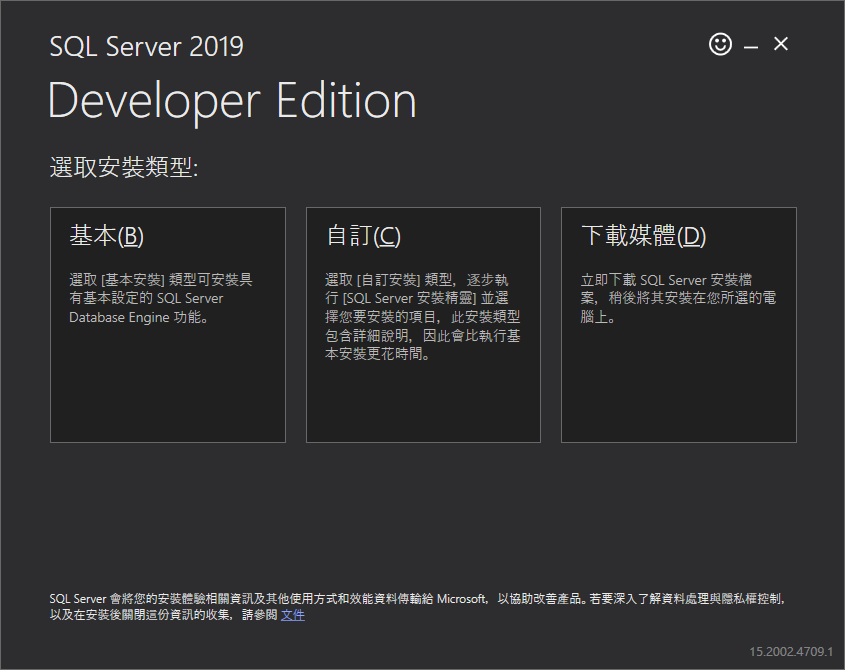
Step 2
接受 Microsoft SQL Server 授權條款，記得選擇語言（高手都選英文無誤）
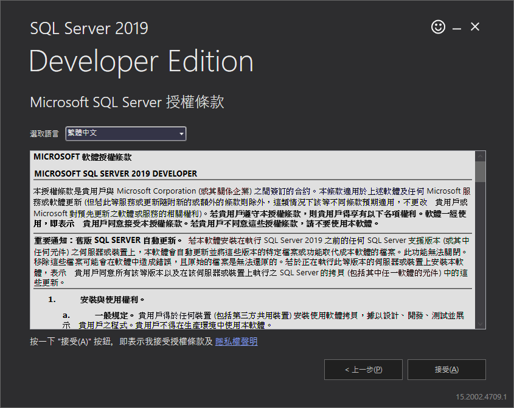
Step 3
選擇要安裝的路徑，預設安裝位置為 C:\Program Files\Microsoft SQL Server
此步驟要特別注意磁碟空間剩餘是否足夠安裝
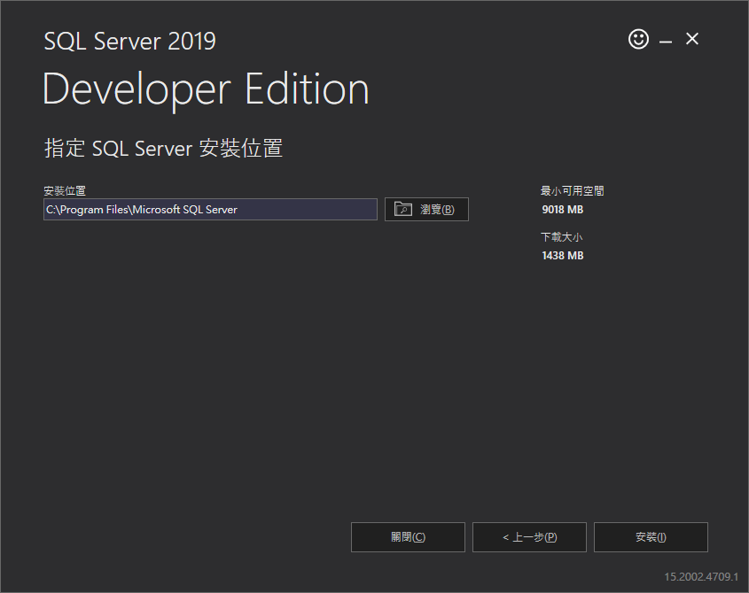
Step 4
按下安裝後會開始下載安裝封裝，下載需要一段時間（本人花費半小時左右），此時網速可開高點。
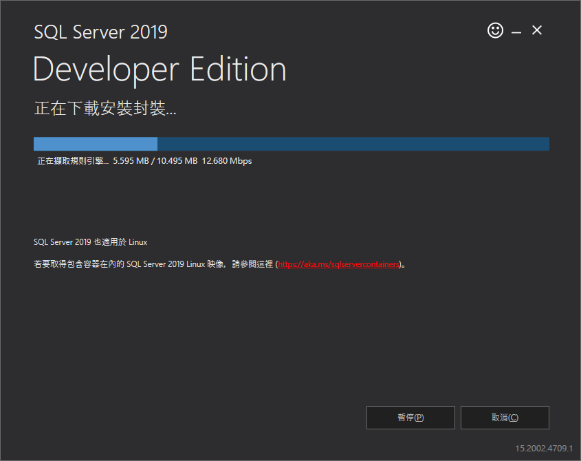
Step 5
下載時會同時安裝，完成後先別急著連線，緊接著安裝SSMS（SQL Server Management Studio），按下安裝 SSMS 開啟載點網頁，直接點擊下載 SSMS，完成後到下載路徑執行 SSMS-Setup-CHT.exe
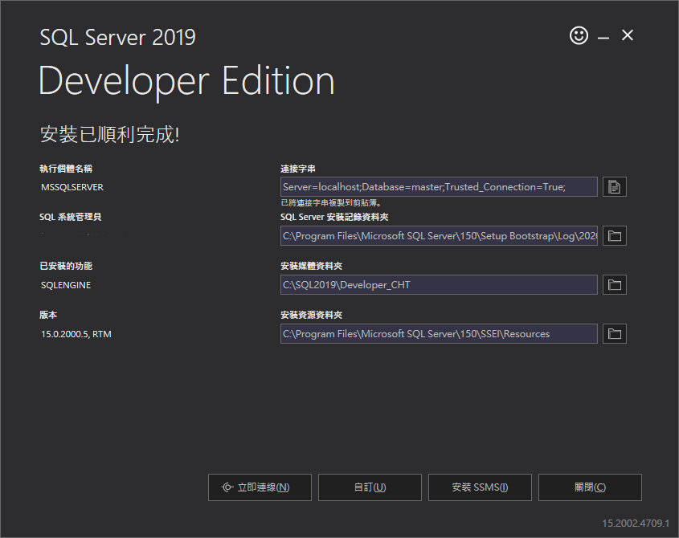
可以在應用程式內看到此次安裝有
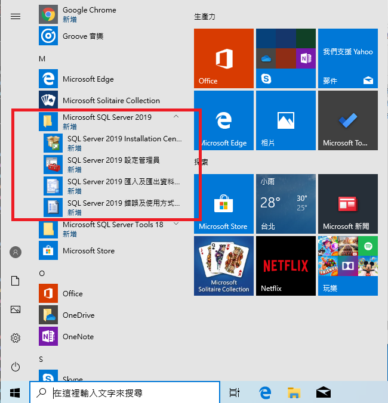
Step 6
SSMS-Setup-CHT.exe 的安裝畫面，預設路徑為 C:\Program Files(x86)，接著執行［安裝］
SQL Server Management Studio 官網載點
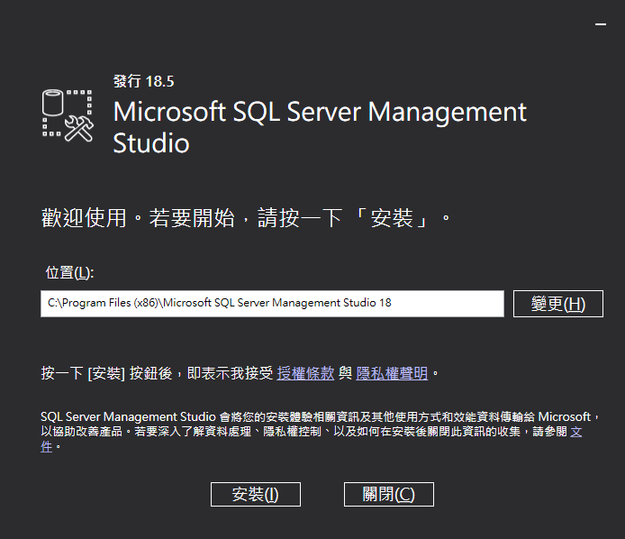
Step 7
下載封裝及安裝
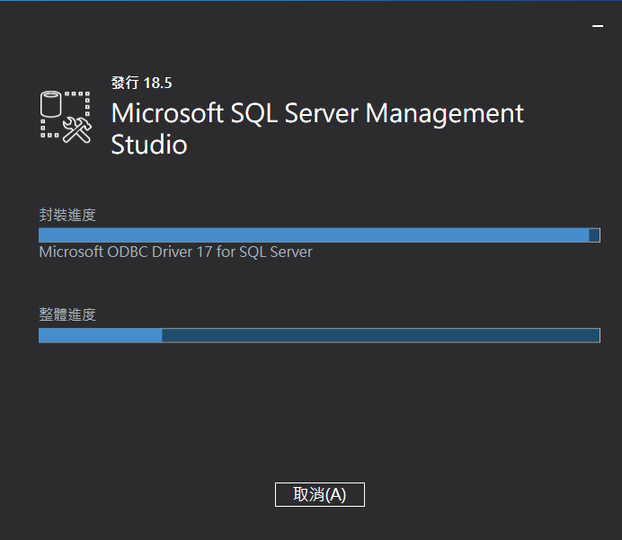
Step 8
威脅性的重啟，你不重啟不能安裝
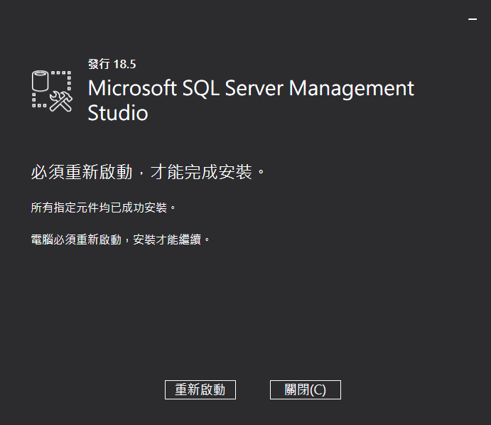
Step 9
重啟完成後，使用搜尋來尋找到SSMS並開啟
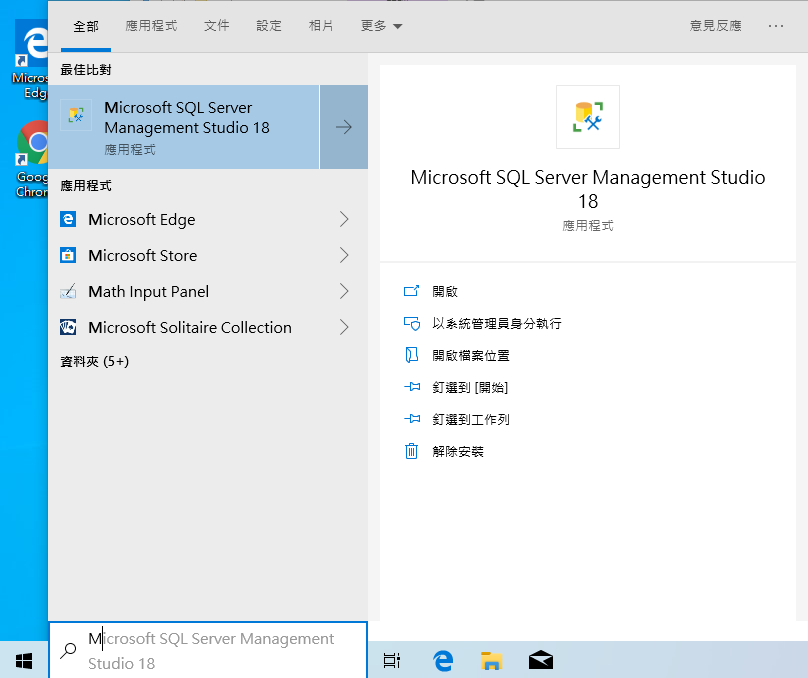
Step 10
成功開啟！
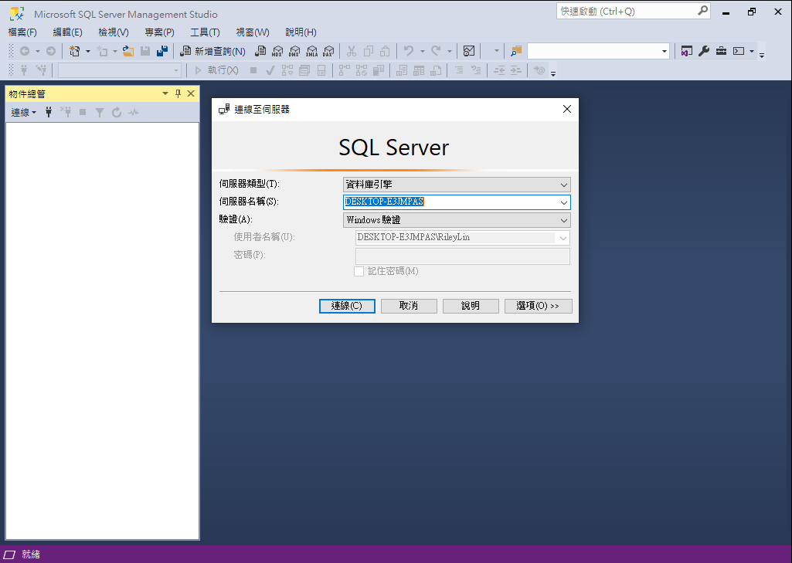
可以在應用程式內看到此次安裝有
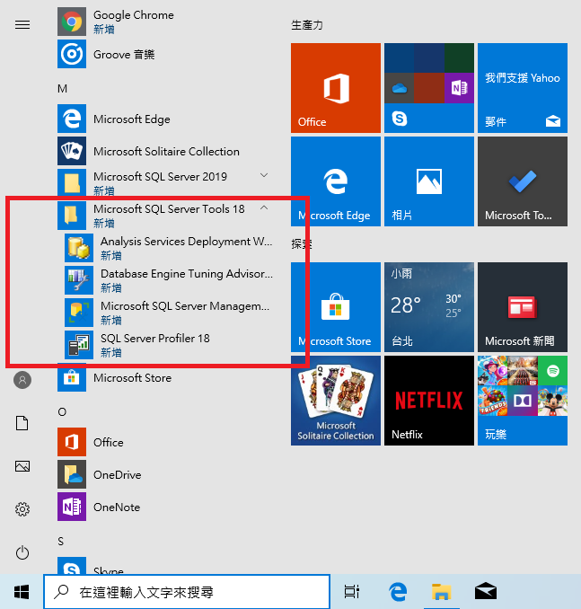